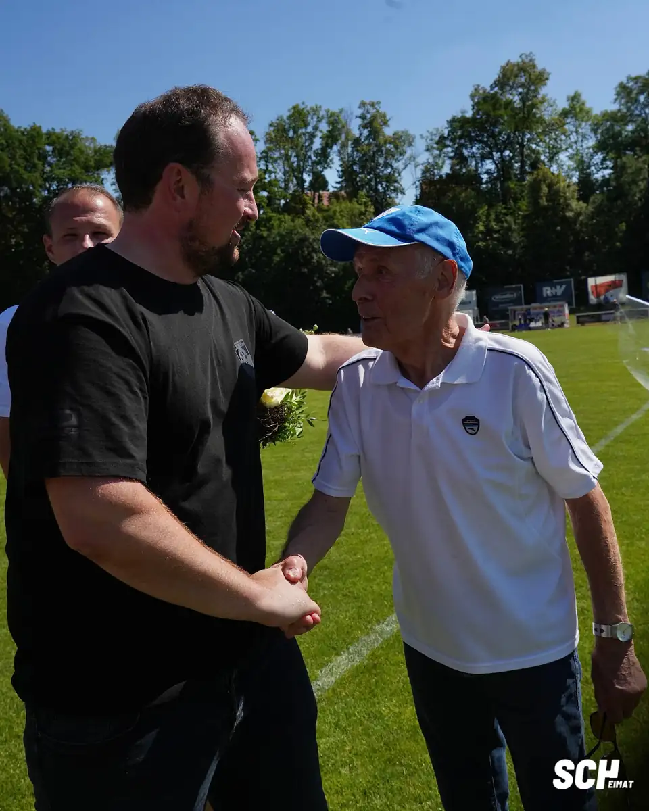
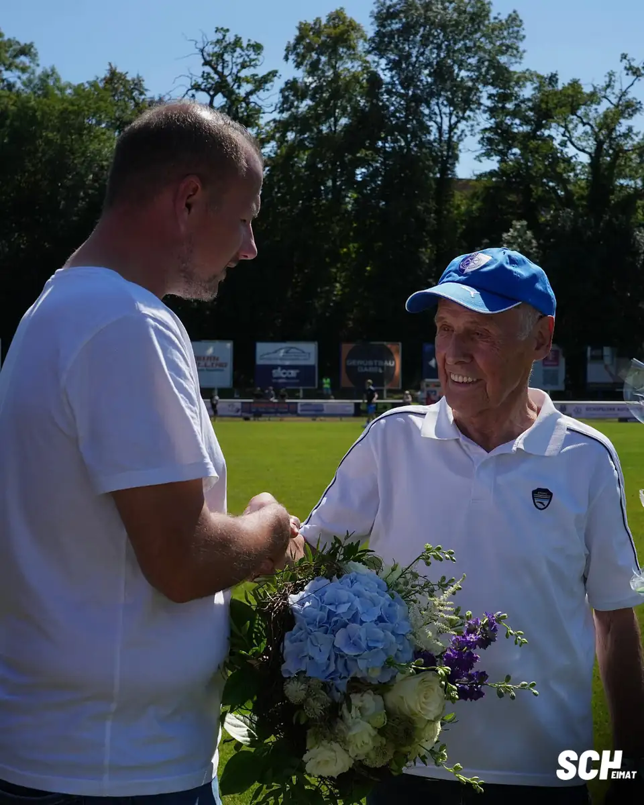
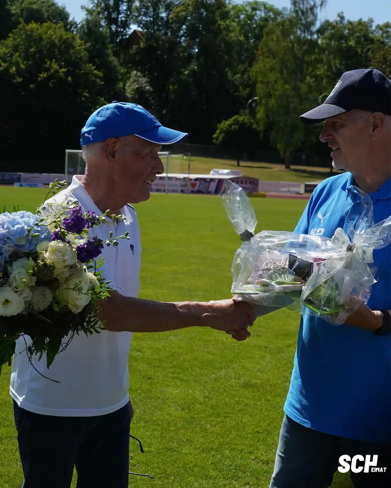

Danke, Bernd – für mehr als vier Jahrzehnte Treue zum SCH
Es gibt Menschen in einem Verein, die nur selten im Mittelpunkt stehen. Die keine Tore schießen, keine Schlagzeilen bekommen und trotzdem über Jahrzehnte dafür sorgen, dass ein Verein funktioniert. Bernd Brodmann ist einer dieser Menschen.
Seit 1980 ist Bernd Mitglied bei unserem SC. Mehr als vier Jahrzehnte hält er unserem Verein inzwischen die Treue. Eine lange Zeit, in der sich beim SCH vieles verändert hat – doch auf einen konnten wir uns immer verlassen: auf Bernd.
Seit über 25 Jahren bei unseren Heimspielen im Einsatz
Im Jahr 2000 übernahm Bernd zusätzlich Verantwortung und engagierte sich fortan als Ordner und Kassierer bei unseren Heimspielen. Seitdem gehörte er am Gesundbrunnen einfach dazu.
Mehr als 400 Heimspiele hat er in dieser Zeit begleitet. Über 45.000 Zuschauer hat er dabei an den Eingängen zu unseren Spielen begrüßt. Hinter diesen Zahlen stecken unzählige Wochenenden und noch viel mehr ehrenamtliche Stunden. Stunden, die Bernd unserem Verein geschenkt hat.
Bei Wind und Wetter, bei großen Spielen und an weniger guten Tagen. Egal, in welcher Liga der SCH gerade spielte und egal, wie viele Zuschauer den Weg in den Gesundbrunnen fanden: Bernd war da.
Einer, auf den immer Verlass war
Ein Verein lebt nicht allein von dem, was auf dem Fußballplatz passiert. Er lebt vor allem von den Menschen, die bereit sind, ihre Freizeit einzubringen und Verantwortung zu übernehmen.
Bernd hat genau das über Jahrzehnte getan. Menschen wie er stehen dabei nur selten im Mittelpunkt. Vieles von dem, was sie leisten, wird irgendwann selbstverständlich. Dabei ist es alles andere als selbstverständlich, seinem Verein über einen so langen Zeitraum die Treue zu halten und immer wieder da zu sein, wenn Hilfe gebraucht wird. Umso wichtiger ist es uns, heute einmal ganz bewusst Danke zu sagen.
Lieber Bernd, DANKE!
Danke für deine außergewöhnliche Treue.
Danke für mehr als 400 Heimspiele.
Danke für unzählige ehrenamtliche Stunden.
Danke dafür, dass wir uns all die Jahre auf dich verlassen konnten.
Und vor allem: Danke dafür, dass du seit 1980 ein Teil unseres SCH bist.
Im Namen des gesamten 1. SC 1911 Heiligenstadt und unseres Vorstandes möchten wir dir für deinen außergewöhnlichen Einsatz von Herzen danken. Wir wünschen dir für die kommende Zeit vor allem alles Gute und ganz viel Gesundheit.
Und eines hast du dir nach all den Jahren mehr als verdient:
Ab jetzt kannst du unsere Heimspiele endlich von der ersten Minute an sehen.
Lieber Bernd, wir sagen einfach: DANKE!


